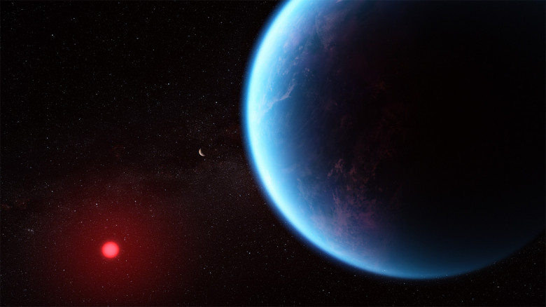

Углекислый газ в атмосфере экзопланеты K2-18b |
|
|
Космический телескоп «Джеймс Уэбб» обнаружил углеродсодержащие молекулы, включая метан и углекислый газ, в атмосфере экзопланеты К2-18b. Она в 8,6 раз больше Земли. Это открытие дополняет недавние исследования, предполагающие, что K2-18 b может быть экзопланетой Хайса, которая потенциально способна обладать богатой водородом атмосферой и иметь океаны на поверхности. Это, в свою очередь, может свидетельствовать о существовании гикеанских планет — горячих космических тел с океаном на поверхности. Хотя K2-18 b находится в обитаемой зоне и, как теперь известно, содержит углеродсодержащие молекулы, это не обязательно означает, что на планете может поддерживаться жизнь. Большой размер планеты — радиус в 2,6 раза больше радиуса Земли — означает, что внутренняя её часть, вероятно, содержит большую мантию из льда высокого давления, как у Нептуна, но с более тонкой, богатой водородом атмосферой и океаном на поверхности. «Этот результат стал возможен только благодаря расширенному диапазону длин волн и беспрецедентной чувствительности Уэбба, который позволил надёжно обнаружить спектральные особенности всего за два прохождения», — сказал Мадхусудхан. Астрономы подчёркивают, что нынешняя работа — всего лишь ранняя демонстрация того, на что способен телескоп. |
реклама реклама реклама реклама реклама реклама реклама реклама реклама реклама реклама реклама реклама реклама реклама реклама реклама реклама реклама реклама реклама реклама реклама реклама реклама реклама реклама реклама реклама реклама реклама реклама реклама реклама реклама реклама |
| реклама реклама реклама реклама реклама реклама реклама реклама реклама реклама реклама реклама реклама реклама реклама реклама реклама реклама реклама реклама реклама реклама реклама реклама реклама реклама реклама реклама реклама реклама реклама реклама реклама реклама реклама реклама |
Обратная связьНапишите нам | |
| Хисамутдинова А.М., 2024 |